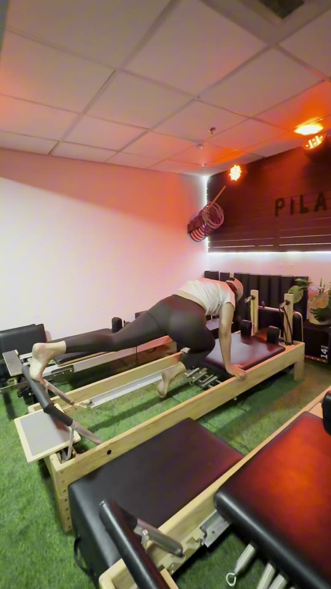

פילאטיס מכשירים למתחילות — מה זה רפורמר ולמה כולן מדברות עליו
אם שמעת חברות מדברות על "רפורמר" ותהית מה בדיוק קורה שם על המיטה הזאת עם הקפיצים — את במקום הנכון. פילאטיס מכשירים הפך בשנים האחרונות לאחד האימונים המדוברים בעולם הכושר לנשים, ולגמרי בצדק. במדריך הזה נסביר בפשטות מה זה רפורמר, במה הוא שונה מפילאטיס מזרן, למי הוא מתאים — ונספר גם על חדר הפילאטיס מכשירים החדש שנפתח בצפת.

מה זה בעצם רפורמר?
רפורמר הוא מיטת אימון מיוחדת, והוא הלב של פילאטיס מכשירים. על המסגרת שלו יושב משטח נע שנקרא "עגלה", שמחליק קדימה ואחורה. אל העגלה מחוברים קפיצים בדרגות שונות — והם אלה שיוצרים את ההתנגדות: מוסיפים קפיצים כדי להקשות, או מורידים כדי להקל ולקבל יותר תמיכה.
בנוסף יש רצועות לידיים ולרגליים ובר קבוע לדחיפה. השילוב הזה מאפשר לבצע עשרות תרגילים בשכיבה, בישיבה ובעמידה — הכול בתנועה איטית, מבוקרת וזורמת. זה נראה עדין מהצד, אבל השרירים מרגישים את זה היטב.
במה רפורמר שונה מפילאטיס מזרן?
שתי השיטות בנויות על אותם עקרונות — נשימה, שליטה ועבודה על שרירי הליבה — אבל הרפורמר מוסיף שני דברים שהמזרן לא יכול: התנגדות מתכווננת ותמיכה.
- במזרן — עובדים עם משקל הגוף בלבד, והגוף צריך לייצב את עצמו לגמרי לבד.
- ברפורמר — הקפיצים גם מאתגרים את השרירים וגם מכוונים את התנועה, כך שקל יותר לבצע כל תרגיל בצורה מדויקת.
בגלל זה דווקא מתחילות רבות מוצאות שנוח יותר להיכנס לעולם הפילאטיס דרך המכשיר: הוא נותן משוב מיידי ועוזר לגוף להבין מה הוא אמור לעשות.
מה זה עושה לגוף? היתרונות של אימון רפורמר
אימון רפורמר הוא אימון כוח עדין לכל הגוף, עם דגש מיוחד על:
- שרירי הליבה — כמעט כל תרגיל דורש ייצוב של הבטן והגב לכל אורך התנועה.
- יציבה — עבודה על השרירים העמוקים שתומכים בעמוד השדרה.
- גמישות וטווחי תנועה — התנועות ארוכות וזורמות, והקפיצים מאפשרים מתיחה מבוקרת.
- חיזוק בלי קפיצות — אין ניתורים ואין דפיקות למפרקים, ולכן האימון נחשב עדין ונגיש לרוב הרמות.
וחוץ מהכול — זה פשוט נעים. ריכוז מלא בגוף ובנשימה: גם אימון, גם ראש שקט.
למי פילאטיס מכשירים מתאים?
אחד הדברים היפים ברפורמר הוא שהוא נפגש עם כל אחת בדיוק איפה שהיא נמצאת — אותו תרגיל יכול להיות קל או מאתגר, לפי כמות הקפיצים.
- מתחילות לגמרי — המכשיר תומך, מכוון, ולא דורש שום ניסיון קודם.
- נשים שנמנעות מקפיצות — מי שמעדיפה אימון ללא ניתורים ועומסים פתאומיים.
- אחרי לידה — דרך הדרגתית ועדינה לחזור לתנועה, אך ורק באישור הרופא/ה המטפל/ת ובקצב שמתאים לך. מיכל מתמחה בליווי נשים אחרי לידה.
- מתאמנות מנוסות — עם מספיק קפיצים, גם ותיקות מוצאות ברפורמר אתגר אמיתי.
איך נראה שיעור ראשון?
אין מה להתרגש — כולן היו פעם ראשונות על המיטה. מגיעות בבגדים נוחים (גרביים עם סוליה מונעת החלקה הן תוספת מומלצת), ומתחילות בהיכרות עם המכשיר: איך העגלה זזה, איך מחליפים קפיצים ואיך נשכבים נכון.
משם עוברים לתרגילי בסיס בקצב רגוע, עם דגש על נשימה ותנועה מדויקת. בקבוצות הקטנות יש למדריכה עין על כל מתאמנת, כך שההתנגדות והתרגילים מותאמים בדיוק לרמה שלך. הרבה נשים יוצאות מהשיעור הראשון מופתעות — גם מהעומק של האימון, וגם מכמה שהוא נעים.
רפורמר בצפת — חדר הפילאטיס מכשירים החדש במיכל פיטנס סטודיו
החדשות המשמחות: במיכל פיטנס סטודיו — סטודיו הכושר לנשים בקניון שערי העיר בצפת (רחוב הגדוד השלישי) — נפתח חדר פילאטיס מכשירים חדש, עם מיטות רפורמר חדשות ושיעורים בקבוצות קטנות. את הסטודיו מובילה מיכל רייכר, בוגרת מכון וינגייט עם מעל 12 שנות ניסיון, באווירה המשפחתית והאישית שהסטודיו מוכר בה.
המחירים:
- כניסת ניסיון חד־פעמית — 79₪
- כרטיסייה 4 כניסות — 270₪ (בתוקף חודשיים)
- כרטיסייה 8 כניסות — 519₪ (בתוקף 3 חודשים)
- מנוי משולב 1 מכשירים + 1 סטודיו — 489₪
- מנוי משולב 2 סטודיו + 1 מכשירים — 629₪
- מנוי חודשי היכרות, 8 כניסות לסטודיו ולפילאטיס — 449₪
- 5% הנחה למתאמנות פעילות
נרשמים דרך אפליקציית Boost, ולכל שאלה אפשר לשלוח לנו הודעה בוואטסאפ 054-344-9212.
שאלות נפוצות
האם פילאטיס מכשירים מתאים למתחילות בלי שום ניסיון?
בהחלט. ההתנגדות בקפיצים מתכווננת לכל רמה, והמכשיר עצמו תומך ומכוון את התנועה — ולכן נשים רבות דווקא מתחילות את דרכן בפילאטיס דרך הרפורמר. במיכל פיטנס סטודיו אפשר להגיע לכניסת ניסיון חד־פעמית ב-79₪.
מה ההבדל בין פילאטיס מכשירים לפילאטיס מזרן?
בפילאטיס מזרן עובדים עם משקל הגוף בלבד, ואילו ברפורמר הקפיצים מוסיפים התנגדות מתכווננת וגם תמיכה בתנועה. שתי השיטות עובדות על ליבה, יציבה וגמישות — והן משלימות זו את זו.
אפשר להתאמן ברפורמר אחרי לידה?
נשים רבות בוחרות בפילאטיס מכשירים כדרך הדרגתית ועדינה לחזור לתנועה אחרי לידה, אבל חשוב להתחיל רק באישור הרופא/ה המטפל/ת ובהתאם להנחיותיהם. מיכל מתמחה בליווי נשים אחרי לידה, והאימון מותאם אישית לקצב שלך.
כמה עולה פילאטיס מכשירים בצפת?
במיכל פיטנס סטודיו כניסת ניסיון עולה 79₪, כרטיסייה של 4 כניסות 270₪ וכרטיסייה של 8 כניסות 519₪. יש גם מנויים משולבים עם שיעורי הסטודיו, ומנוי היכרות חודשי של 8 כניסות ב-449₪.
מוכנה להרגיש את זה בעצמך? שלחי לנו הודעה בוואטסאפ 054-344-9212 או הירשמי דרך אפליקציית Boost — כניסת ניסיון לרפורמר ב-79₪ בלבד, ואנחנו כבר שומרות לך מקום על המיטה.
לשריון כניסת ניסיון · 79 ₪ למחירון המלא